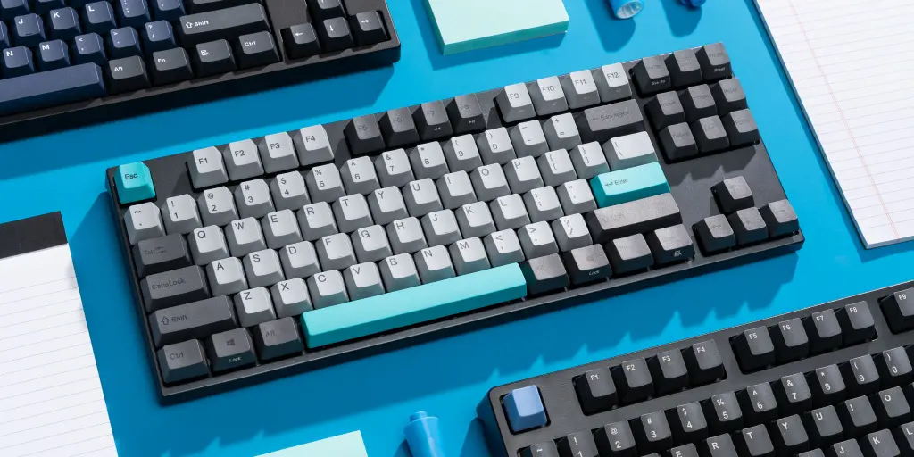

Mechanical Keyboards!
Welcome to all things mechanical keyboards! Ever wonder how mechanical switches actually work? What even are stabilizers? What types of keycap profiles are there? The market for mechanical keyboards is only growing, and the options for putting together a custom keyboard continues growing. Here, I'll provide some basic knowledge to help you understand what's going on inside your keyboard.

Switches
Switches are the essence of typing. What switch you get can make or break your keyboard. Many know of the big three switches by Cherry- Reds, Browns and Blues, but what really is the difference between these switches, and are there more options? Come explore!

See Article ▶